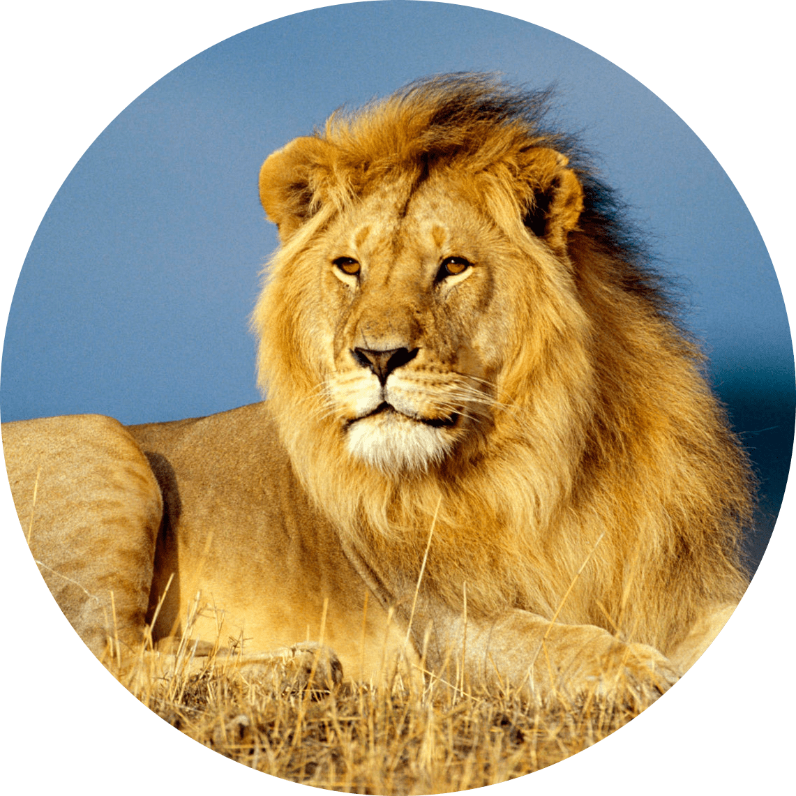
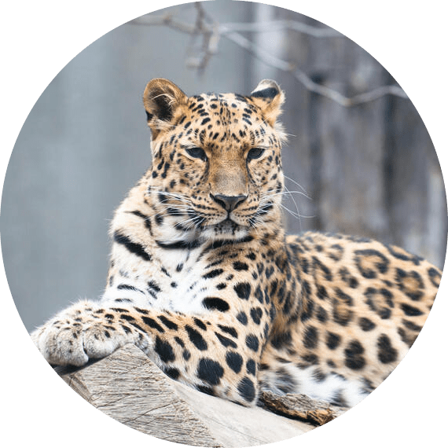
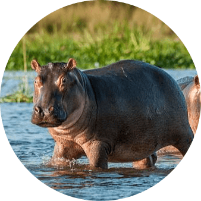
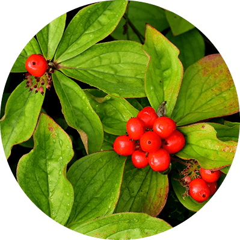
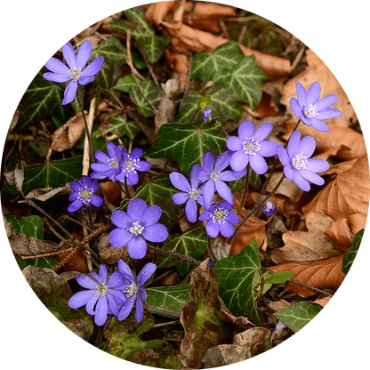
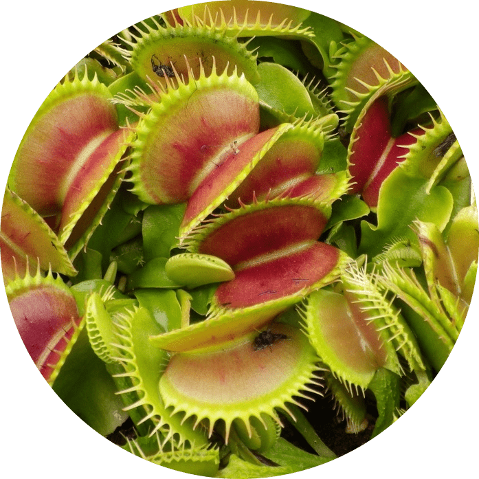
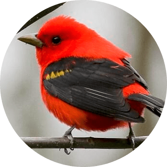

Lion
The lion is a large cat of the genus Panthera native to Africa and India.It has a muscular, deep-chested body...

Leopard
The leopard is one of the five extant species in the genus Panthera, a member of the cat family, Felidae....
Deer
Deer or true deer are hoofed ruminant mammals forming the family Cervidae....

Hippopotamus
The hippopotamus, also called the hippo, common hippopotamus or river hippopotamus...



bunchberry
Among the smallest of a genus of mostly shrubs and trees, Bunchberry makes an excellent ground cover in the moist...
Trillium
Trillium is a genus of about fifty flowering plant species in the family Melanthiaceae...

Hepatica
Hepatica is a genus in the buttercup family (Ranunculaceae) native to the Northern Hemisphere...

Flytraps
The Venus flytrap (Dionaea muscipula) is a carnivorous plant native to subtropical wetlands on the East Coast..

Hornbill
Hornbills are a family of bird found in tropical and subtropical Africa, Asia and Melanesia....
Black Woodpecker
The black-backed woodpecker, also known as the Arctic three-toed woodpecker...

Scarlet Tanager
The scarlet tanager is a medium-sized American songbird. Until recently, it was placed...